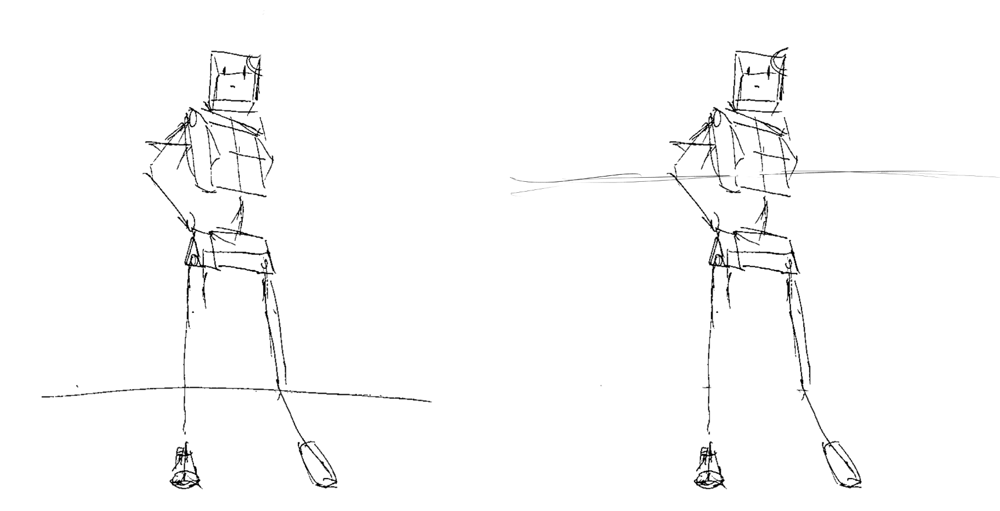
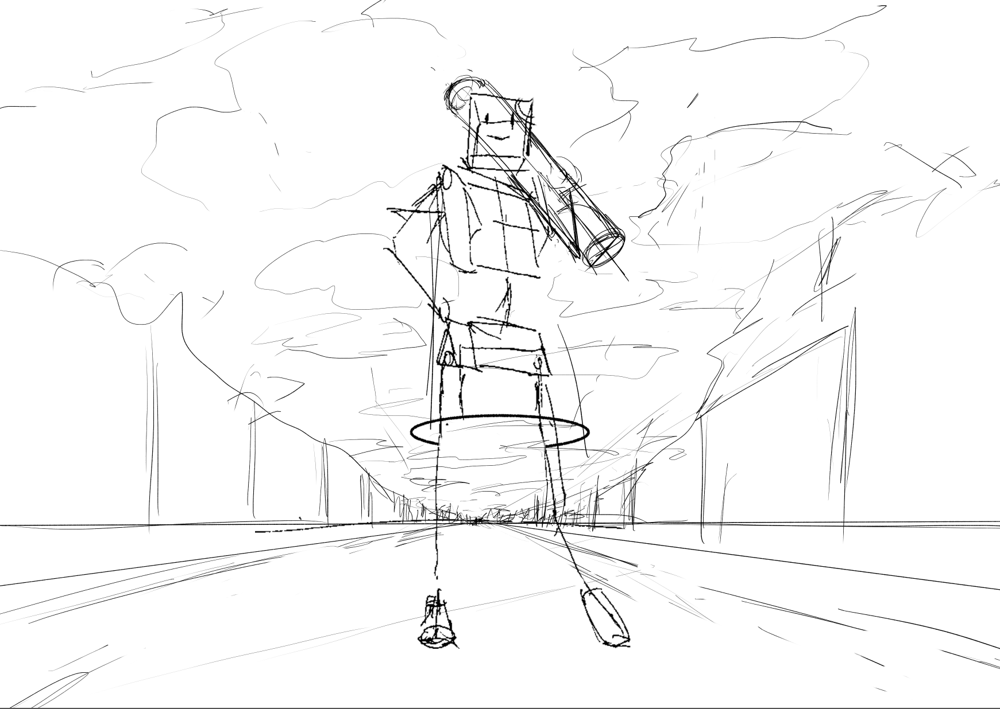
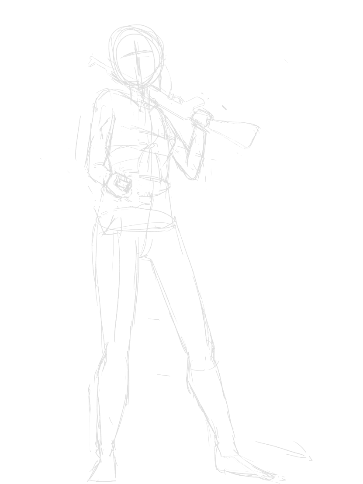
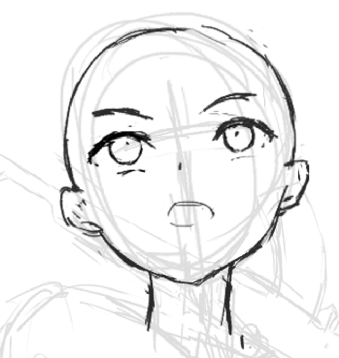
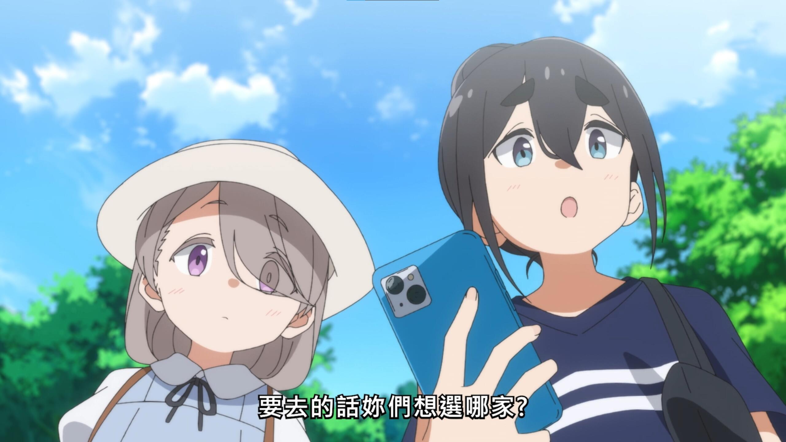
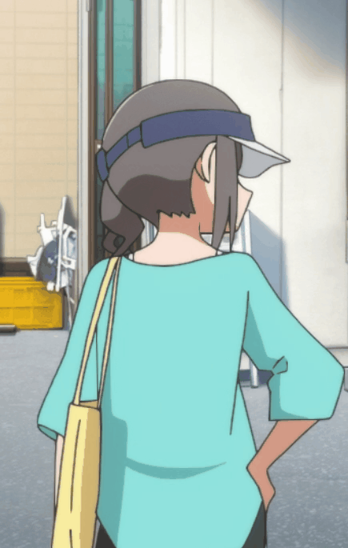
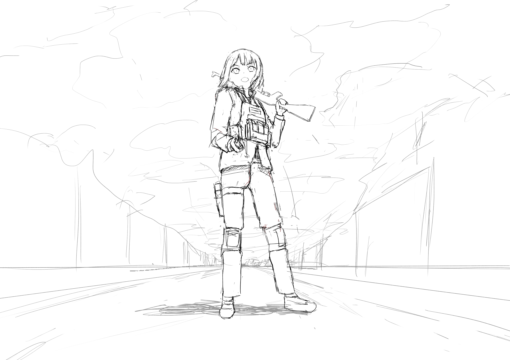

Project One
Project One！以后每个星期都要原创一张，目的是为了愉悦自己，让自己不再害怕应用所学。
Project Zero出发点有一些问题，先定了俯视图再定的构图，应当先用草图定构图再做其他。
难度肯定是远超我当前水平的，我的目的就是挣扎着把它画下去，再这几天（直到周四或者周五）把完成度提到最高，这也是一种斗争。
先说需求吧，上次画的是惠玉，我后面肯定会去再画百合图的，但这次，想画画自己。虽然说是自己，但是是自己的……理想中的自己的某种投影吧。
这次尝试去模仿SHION老师的画风，主题是一点透视的街道城市背景+全身像少女，背景阴郁，低饱和度，少女，两脚叉开，左手持一把长枪（考虑是莫辛纳甘或 AK47，左手持枪，因为她是左利手）靠在肩上，右手叉腰，小臂为废土朋克风的机械义肢（或者整个是机械义肢？），（左手拿着一个哑铃尝试了一下，这个姿势的话重心会偏向右脚）浑身衣服破烂，但眼神鉴定，睥睨着镜头上方。
shion老师的作品，少女们通常都是面对镜头的，我本想让她侧头看镜头，身体面对镜头朝向或者这个方向的垂直方向（因为，要朝前走嘛），但结果很难画出来，所以我也让她面对镜头好了，就像摆个pose。
但另一个抉择，地平线放在哪个高度？shion老师习惯把地平线高度放到少女的上半身，但这里感觉为了体现出一些东西吧，我想把地平线安排到小腿位置。测试发现，只是改变这一条线的高度，不改变透视，就会感觉左边的角色更高大，右边的角色腿更长（？），左边仰视感，更自信，右边俯视感或平视感，很怪异。

OK，然后把草图整出来：

这里我实际上就已经有疑问了……这两边的房屋究竟要放到多远？即房屋底下的灭线的斜率该是多少？这个可能得看直觉或者按人的宽度估算一下。
下一步是把草稿画出来，这里定出了灭点和地平线，已经可以开始画背景了，以及人的衣服，左手的枪械的具体结构。但背景怎么画是个很大的问题……
现在，关键是回答下面的问题：
- 她的发型如何？
- 碎短发吧，参考偶像大师的真哥那种发型，不过如果用这种发型的话又不穿裙子可能难以辨认性别
- 她的脸型是幼态还是少女？五官准备怎么考虑？
- 少女，眼睛不要画过大（不要学最近研究的BUNBUN的画风），相对写实一些，吊眼，眼神凶一些（不过非平视的话吊眼垂眼其实区别不大？）
- 她的服饰如何？
- 修改，左手我想到新的点子，改成拿着一个手持电台，机械义肢就先pass掉（可见这张图趣味的发展……我最开始想到她是孤军奋战，左臂的缺乏维护的朋克风的义肢，以及破烂的衣服证明这一点，但拿着手持电台的话……就更符合我对理想的我的看法吧，我现在不是，将来也不是孤军奋战）
- 士兵装扮吧，但背一个包？

顺便我意识到我手臂画短了，后面改。
妈的，我最初是想画啥来着？我……我其实想要的是全境封锁那种风格，平民化的服装+军事护具。那，关于服饰：
- 上身带帽的冲锋衣，拉链半开，看是否要竖起来的领子；冲锋衣外穿防弹背心，插几个弹匣
- 下半身牛仔裤，左膝盖护具，右膝盖严重磨损
先把草图画出来，完整的人物的草图，我再去找参考。

吐槽：这个仰视角度，根本不可能有下巴这处线条，但是如果不画下巴线条就不知道该怎么去处理这个角度了……正好今天去看MONO，发现它对此的处理是使用阴影（这阴影的形状在现实中是不可能的，但它就是好用，等后面上色（如果真的有上色的话）我再看怎么去处理。

顺便，这集 mono 好棒，感觉自己今天看番时会更多注意到镜头、透视、结构和人体姿态的样子，这是因为今天画了东西的效果吗，脑袋集中注意力在这上面了？

然后……画成这样，防弹背心（正确的说法是，防弹插板背心？）确实是找了参考，这个不找参考我毫无头绪去画它……同样，衣物的软硬，厚薄，褶皱，我完全没有头绪，只能随便画画，找淘宝上的图做参考…

但……先这样吧，这张图我感觉我丧失了画下去的兴趣，我本想尝试去表现一下理想的自己，但觉得现在这题材的发展逐渐朝着我没有兴致的方向发展了。我考虑当下还是去画点更简单的，更强调人物、动态（而非这样全身像+背景，内容复杂）的，能让我完全画完的题材。
把这……当成一次尝试吧。我可能还会回来。后面的画我就不叫Project XXX了，不至于了。这张就不发到p站了，我得在完成度更高时再发。
本博客所有文章除特别声明外，均采用 CC BY-NC-SA 4.0 协议 ，转载请注明出处！